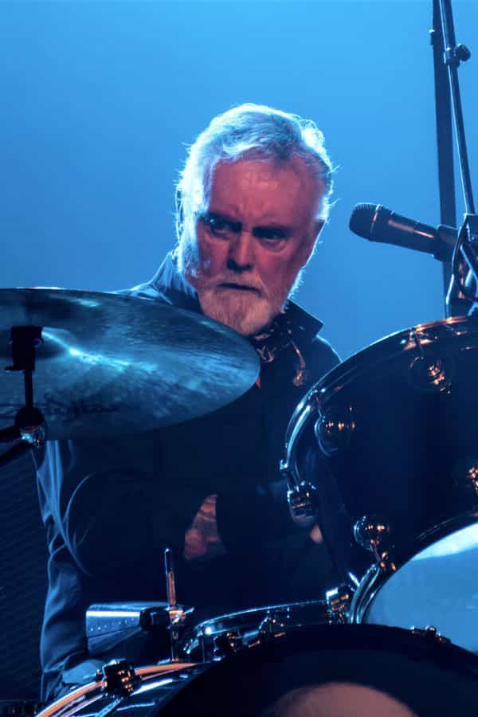

Queen Official Website
Queen "are a British rock band formed in London in 1970 by Freddie Mercury, Brian May, Roger Taylor, and, later, John Deacon." Source: Wikipedia
Members of Queen
Learn more about the members of Queen.


Roger Taylor
Fun Facts
These are my favorites.
Freddie Mercury
Born: Stone Town, Zanzibar
Instruments: Vocals, keyboards
Brian May
Born: Hampton, England
Instruments: Guitar, keyboards, vocals
Roger Taylor
Born: King's Lynn, England
Instruments: Drums, guitar, keyboards, vocals
John Deacon
Born: Leicester, England
Instruments: Bass, guitar, keyboards
*Images and information were acquired and used from the sample content from the other ICJ Class.